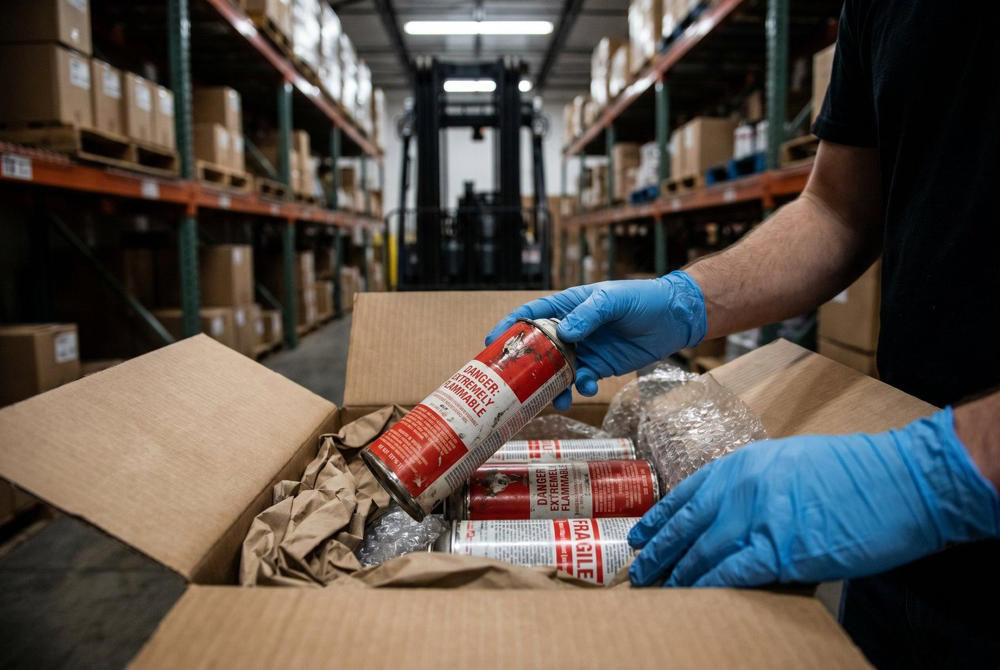

Deodorant. Hårspray. Parfume. Sender du dem, er du ansvarlig.
Aerosoler er trykbeholdere under ADR Klasse 2 (UN 1950). Sender du dem forkert: 5.000+ kr. i bøde. Sender du dem uden LQ-mærkning: fragtleverandøren kan opsige samarbejdet. Sender du dem med fly uden godkendelse: straffeansvar.
Konsekvensen ved manglende compliance:
- Første overtrædelse: 5.000-10.000 kr. i bøde
- Pakke tilbageholdt: 1.200-3.000 kr. i tabt fragt + kunde returnerer ordre
- Fragtleverandør opsiger aftale: du mister 30-50% af din forretning på én dag
Hvad er en aerosol?
En aerosol er en beholder under tryk, der indeholder flydende, pastaagtig eller pulverformig substans, som sprøjtes ud som fine dråber ved hjælp af en drivgas. De klassificeres som UN 1950.
Eksempler: deodorant, hårspray, barberskum, malingsspray, rengøringsspray, insektspray, lækmiddel til ski.
👉 Har du samme udfordring? Se hvordan SmartPack løser det i praksis
Hvad koster manglende compliance?
| Scenario | Konsekvens | Kr./år (estimat) |
|---|---|---|
| Sender 100 deodorant-pakker/måned uden LQ-mærkning | Bøde ved fragtleverandør-audit + mulig opsigelse | 5.000-15.000 kr. |
| Sender malingsspray uden korrekt klassificering | Pakke tilbageholdt i Tyskland + returnering | 2.500-5.000 kr. per hændelse |
| Sender aerosoler med fly uden IATA DGR-godkendelse | Straffeansvar + bøde 25.000-100.000 kr. | 25.000+ kr. |
Real cost: For en webshop med 300 aerosol-produkter/måned = 10.000-25.000 kr./år i risiko ved manglende compliance.
ADR-klassificering
UN 1950: Aerosoler
Klasse: 2.1 (brandfarlig) eller 2.2 (ikke-brandfarlig) afhængigt af indhold
For webshops er ADR Klasse 2 (UN 1950) den relevante klassificering for næsten alle forbrugervarer i spraydåser.
Limited Quantities (LQ) for aerosoler
Under LQ-ordningen kan aerosoler sendes med lempede krav:
- Max per inderpakning: 1 liter net
- Max per kolli: 30 kg
- Krav: LQ-diamant mærkning
For de fleste webshop-forsendelser (1-6 dåser per pakke) er LQ tilstrækkelig.
Fragtleverandørernes krav til aerosoler
GLS: Accepterer aerosoler under LQ med korrekt mærkning. Visse produkter kræver specifik godkendelse.
PostNord: Tjek aktuelt regelsæt, PostNord har skærpet krav til trykbeholdere i visse pakke-kategorier.
Bring: Aerosoler kræver typisk forhåndsgodkendelse.
Bemærk: Regler opdateres løbende. Tjek altid din fragtleverandørs aktuelle DG-vejledning.
Emballagekrav til aerosoler
- Primæremballage: Intakt og ubeskadiget spraydåse
- Yderpakning: Solid kartonkasse, korrekt tapet
- Beskyttelse: Aerosoler må ikke kunne aktiveres utilsigtet (brug dæksler eller tape over aktiveringsknappen)
- LQ-mærke: Obligatorisk
Særlig opmærksomhed: Spraydåser er trykbeholdere, de må IKKE komprimeres eller kastes. Emballagen skal sikre mod dette.
Temperaturkrav
Aerosoler er følsomme for høj temperatur (eksploderer over 50°C). Undgå forsendelse i perioder med ekstrem varme uden temperaturkontrol. Fragtleverandørerne lader typisk pakker stå i ikke-klimakontrollerede lagerfaciliteter.
Hvad med malingsspray og professionelle produkter?
Malingsspray og tekniske aerosoler er typisk brandfarlige og kræver samme LQ-behandling. Nogle professionelle aerosoler indeholder brandfarlige gasser der ikke er tilladt under LQ og kræver fuld ADR-compliance. Tjek altid produktets sikkerhedsdatablad (SDS/MSDS) for korrekt klassificering.
Det opdager de fleste for sent
- Sommervarme 2024, du sender 200 deodorant-pakker i uge 28. Fragtbilen står parkeret i solen i 4 timer ved 38°C. 12 dåser eksploderer. Fragtleverandøren fakturerer dig for skade på andre pakker: 18.000 kr.
- Fragtleverandør-audit uge 42, GLS checker dine sidste 50 forsendelser. 38 af dem mangler LQ-mærkning. De kræver fuld gennemgang af alle processer og truer med opsigelse ved næste fejl.
- Ny medarbejder starter mandag, hun pakker 15 hårspray-ordrer uden hætte på aktiveringsknappen. 3 dåser aktiveres under transport. Pakken returneres, kunde klager, du mister 2.400 kr. i tabt salg.
Typiske fejl
- Ingen LQ-mærkning på pakken
- Beskyttelseshætten er ikke monteret (aktiveringsknap ubeskyttet)
- Sender over LQ-grænsen
- Blander aerosoler og brandfarlige væsker i samme pakke (øger risiko)
- Lagrer aerosoler i varmt lagerrum om sommeren
Gør det rigtigt nu
- Mærk alle aerosol-produkter i systemet som ADR Klasse 2 (UN 1950), gør det i dag
- Sæt hætter på alle dåser inden pakning, systemtjek via checkliste
- Implementér LQ-mærkning for alle aerosol-forsendelser, køb labels nu (100 stk. = 150 kr.)
- Tjek lagertemperatur, aerosoler under 50°C (normalt ikke et problem i DK, men tjek om sommeren)
- Kend fragtleverandørens specifikke grænser, ring til dem i morgen
SmartPack og aerosoler: Hvornår giver det mening?
JA, hvis:
- Du sender 50+ aerosol-produkter/måned
- Du har flere medarbejdere der pakker
- Du har haft 1+ fejl i de sidste 6 måneder
SmartPack-fordel: Kræver tjekliste-bekræftelse ved pakning af aerosoler: hætte monteret, LQ-mærke klar, korrekt antal per kolli.
Brug denne artikel
- ✓ Klassificér alle aerosol-produkter som UN 1950 (ADR Klasse 2) i dit system
- ✓ Implementér LQ-diamant mærkning på alle aerosol-forsendelser
- ✓ Sæt beskyttelseshætte på alle dåser inden pakning
- ✓ Afklar specifikt med din fragtleverandør hvilke aerosol-typer de accepterer